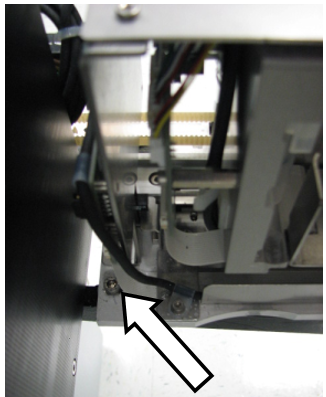
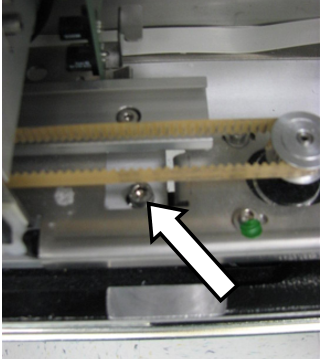
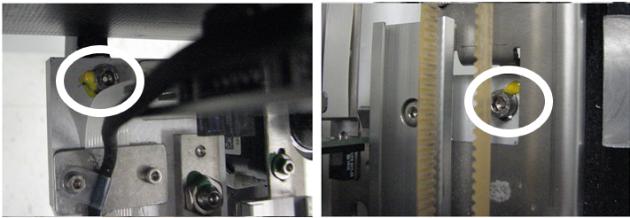
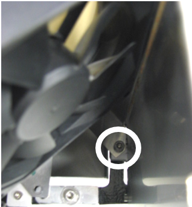
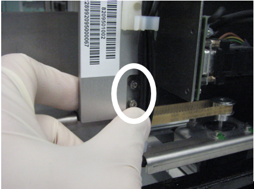
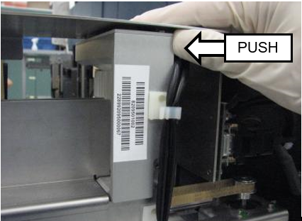

Input Queue Screw Fastening and Inspection Procedure
What is Affected
The current Panther System Input Queue modules are fastened to the frame with screws.
Occasionally, the screws become loose, causing the location of the module to shift in relation to the Linear Distributor.
This may cause errors during assay processing.
To assist in prevention of errors, instructions are provided for the following:
- Part A: Installing lock washers and vibration detection paint onto 2 of the 3 screws that hold the Input Queue to the frame.
Installing lock washers onto the 2 screws that hold the aluminum input queue head on.
- Part B: Inspection procedures for the FSE to check if the input queue drifted or if the head came loose – this is to be used if there is a problem.
Parts and Materials Required
- Proper PPE
- 4 mm Hex wrench
- 2.5 mm Hex wrench
- 2x M5 internal lock washers
- 2x M3 internal lock washers
- Yellow tamper detection paint
Time Required
20 Minutes
Procedure
Part A: Installing Lock-Washers onto the Input Queue
|
|
Caution—To prevent the module from shifting during installation of the lock-washers, only install one lock washer at a time – do not loosen the second screw until the first screw is tightened. |
- Put on proper PPE.
- Shutdown the Panther System and PC.
- Remove the Luminometer injector.
- Fully open the Service Bay.
 Locate the 2 screws that fasten the rear and middle of the Input Queue module to the Service Bay frame (seen below).
Locate the 2 screws that fasten the rear and middle of the Input Queue module to the Service Bay frame (seen below).

Note—The middle screw can only be seen when the Input Queue drawer is open. 

- Using the 4 mm hex tool, remove the screw fastening the rear of the Input Queue module to the service bay frame.
- Place an M5 internal lock washer onto the screw just removed.
- Use the 4 mm hex tool to place the screw back into the same hole.
- Tighten the screw firmly. The torque should be sufficient to crush the barbs on the internal lock washer flat.
- Repeat Steps 3–6 with the screw fastening the middle of the Input Queue of the Service Bay.
- Use the yellow tamper detecting paint to create a seal between the screws just installed and the Input Queue module. Thin coats of paint are more effective than thick coats.

- Use the 4 mm hex tool to ensure that the 3rd screw holding the front of the Input Queue to the frame is tight. A lock washer or paint does not need to be applied to this screw.

- On older Input Queues, locate the 2 screws that hold the aluminum head (MTU Multi-tube unit—Container used to process tests in the instrument. An MTU contains five separate reaction tubes. The MTU is moved through the instrument by the linear distributor and includes five tiplets for pipettiing to be used in the mag wash station. Backstop) of the input queue to the frame of the module.
Note— If you are working on a New Design Input Queue skip to Step 14.
For Older Design Input Queues, continue with Step 13
- Using the 2.5 mm hex tool, remove the top screw.
- Place an M3 internal lock washer onto the screw just removed.
- Use the 2.5 mm hex tool to place the screw back into the same hole.
- Repeat Steps 11–13 with the bottom screw.
- Before fully tightening both screws, ensure that the aluminum head is completely vertical by pushing the top of the head towards the front of the system.

- Tghten the screws firmly. The torque should be sufficient to crush the barbs on the internal lock washer flat.
- The Lock Washer installation is complete.
Part B: Input Queue Inspection
- Use the following procedure if the system indicates that:
- Linear Distributor errors have occurred at the Input Queue.
- Input Queue errors have occurred.
- Shutdown the Panther System and PC.
- Remove the Luminometer injector and fully open the Service Drawer.
- If inspection paint has already been applied to the screws, check for any cracks or evidence of movement.
- If there is evidence of movement, re-align the Input Queue to the Linear Distributor according to the Service Manual.
- Using the 4 mm hex tool, check that the 3 screws fastening the Input Queue to the frame are tight. If they are not tight, it may indicate that the module has drifted: re-align the Input Queue to the Linear Distributor according to the Service Manual.
- If no inspection paint or no lock-washers are present on the module, re-align the Input Queue to the Linear Distributor according to the Service Manual (if necessary), and perform the procedure to install the lock washers and paint as written above.
- Using the 2.5 mm hex tool, check that the 2 screws fastening the Input Queue aluminum head are tight. If they are not tight, or if no lock washers are present, perform Steps 11-16 in the section above (install lock washers if necessary).
Verification
- While looking at the screw that fastens the middle of the Input Queue to the frame, open and close the Input Queue drawer repeatedly and verify that the top of the screw is not scraping or interfering with any part of the module.
- While observing the module, perform a 10x OQ of the Input Queue. Alternatively, one can perform a Prime Operation of pumping fluid through tubing to ensure proper and consistent fluid delivery (remove air from the tubing, etc.). from the Panther Main software. Observe whether the Input Queue is packing MTUs properly and that the Linear Distributor is able to properly pick MTUs from the module.
 button at the top of the page to send feedback, comments, or change requests.
button at the top of the page to send feedback, comments, or change requests.